Introduction|功能介绍
本项目是一款基于开源框架Django的社区划分可视化网站，并尽可能简单灵活地应用数据可视化。特点是UI美观、使用简单、支持大多数浏览器、支持多种文件格式的输入、提供多种社区划分算法。数据可视化的结果包括了网络图、柱状图、饼图、表格，让用户从不同角度获得社区网络划分的结果。可用于：社会网络划分的教学、社交网络分析、定向广告、热点事件分析。
Algorithms|算法简介
1.Label Propagation(LPA)
标签传播算法（LPA）是由Zhu等人于2002年提出，它是一种基于图的半监督式学习方法。该算法的基本原理如下：首先，给全网每个节点分配一个不重复的标签（label）；其次，在迭代的每一步，让一个节点采用在它所有的邻居节点中最流行的标签（如果最佳候选标签超过一个，则在其中随机抽一个）；最后，在迭代收敛时，采用同一种标签的节点被归入同一个社区。 这个算法的核心是通过标签的扩散来模拟某种流在网络上的扩散。其优势是算法简单，特别适用于分析被流所塑造的网络。在大多数情况下可以快速收敛。其缺陷是，迭代的结果有可能不稳定，尤其在不考虑连边的权重时，如果社区结构不明显，或者网络比较小，有可能所有的节点都被归入同一个社区。Reference:Raghavan, U.N. and Albert, R. and Kumara, S. Near linear time algorithm to detect community structures in large-scale networks. Phys Rev E76:036106, 2007. http://arxiv.org/abs/0709.2938 .
Reference: http://www.csdn.net/article/2012-07-03/2807073-k-means
2.BGLL
这个算法速度也很快，效率很高，处理的节点的规模可以很大。 这个方法分两步： （1）从节点合并开始， 构建第一步社团划分结果。每个节点根据模块度增益决定是否加入到邻居节点的社团中和到底加入到哪个邻居节点的社团中。每个节点按序执行该过程。 （2）重新构建网络。把第一步每个社团单做一个节点，边是原来社团之间链接边权的和。 迭代（1），（2），直到收敛。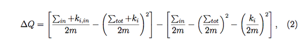
Reference: VD Blondel, J-L Guillaume, R Lambiotte and E Lefebvre: Fast unfolding of community hierarchies in large networks. J Stat Mech P10008(2008), http://arxiv.org/abs/0803.0476
3、Walktrap
P. Pons 和 M. Latapy 2005年提出了一个基于随机游走的网络社区划分算法。他们提出可以使用两点到第三点的流距离之差来衡量两点之间的相似性，从而为划分社区服务。Reference: Pascal Pons, Matthieu Latapy: Computing communities in large networks using random walks, http://arxiv.org/abs/physics/0512106
4、Fastgreedy
一种基于贪婪法思想的凝聚算法，并称这种算法为快速算法。将网络划分为K个社团，定义一个k*k维的对称矩阵E=（），其中元素，表示网络连接两个不同社团的节点的边在所有边中占的比例；这两个节点分别位于第i个社区和第j个社区。1.初始化网络为N个社团，即每个节点就是一个独立社团。
2.依次合并有边相连的社团对，并计算合并后的模块度增量，根据贪婪算法的原理，每次合并应该沿着模块度增大最多或者减少最少的方向进行。每次合并以后，对对应的元素更新，并将与i、j社团相关的行和列相加。
3.重复步骤2，不断合并社团，直到整个网络都合并为一个社团。
4.整个算法完成后，得到一个社区结构分解的树状图。再通过选择在不同位置断开可以得到不同的网络社区结构。在这些社区结构中，选择一个对应局部最大模块度值的结构，就得到最好的网络社区结构。
Reference: A. Clauset, M. E. J. Newman and C. Moore: Finding community structure in very large networks. Phys Rev E 70, 066111 (2004).
Usage|使用指南
１．用户登录网站，还没账号的用户可以即时注册一个账号登录２．进入主界面，页面的右侧有(Data Import)和(Algorithm)的按钮,分别用于数据的导入和算法的选择；点击(Data Import)的按钮，则出现如下的窗口：
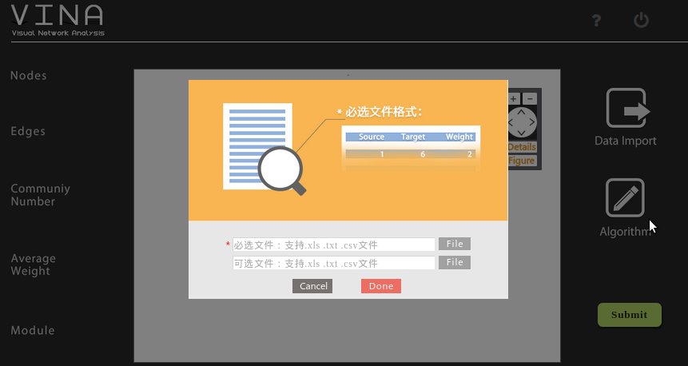
这时我们需要导入两个文件，一个网络构图文件，是必需导入的文件；另一个是标签文件，是可选导入的文件。导入的文件支持xls,txt,csv格式。
首先是网络构图文件，导入的格式如下：
| source | target | weight |
| 2 | 1 | 1 |
导入csv的格式如xls，而导入txt的格式如下：
2,3,1
2,1,2
3,4,3
3,1,1
另一个导入的文件是标签文件，是对每一个节点的说明，格式如下：
| node | label |
| 1 | Kobe |
最后按下Done以做确定．
3．导入文件完后，接下来是选择算法，按下Algorithm键，则弹出提示框，里面有4种算法可供选择，分别有Walktrap, LPA, Fastgreedy,BGLL四种算法，选择完后，按下Done. 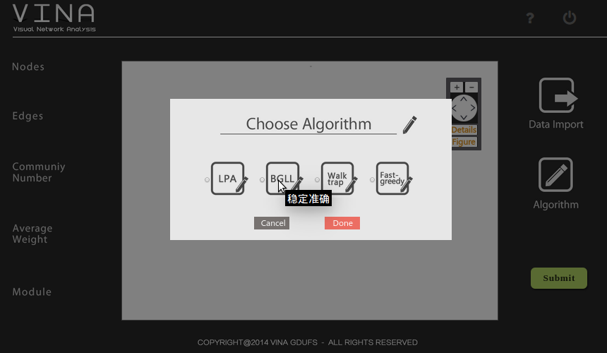
4.最后按下Submit键，等待一段时间，就会出现社区划分的结果：
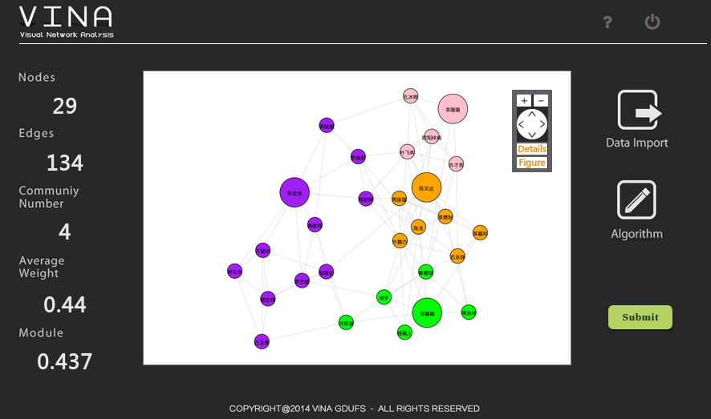
中区是划分的可视化图，不同颜色代表不同社区．左侧是网络社区的相关属性，分别是Nodes(节点),Edges(边数),Community Number(划分的社区数目),Average Weight(平均权重),Module(社区模块度).
5.在中区的图的右上角有按钮Detail,点击此按钮我们可以看到更多的社区划分信息．如下：
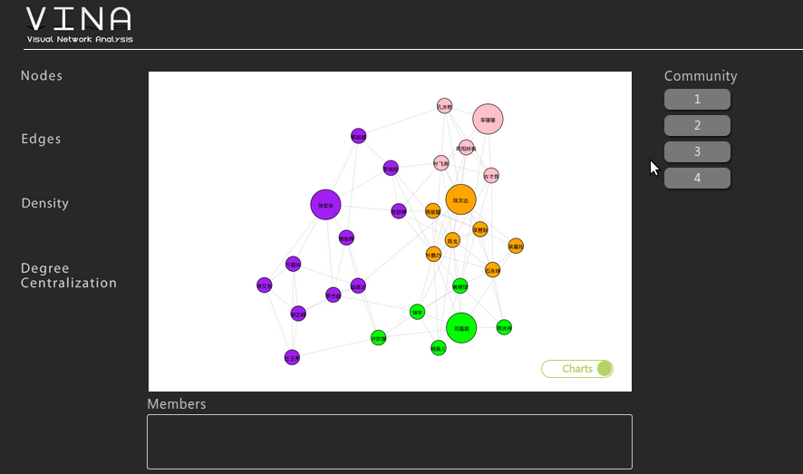
在这个页面上，我们可以看到社区划分后，每个社区所包含的节点的情况，如社区一中分到的节点有Kobe,James,Curry等；除此我们点击每个社区的按钮以看到每个社区里部的情况，如下：
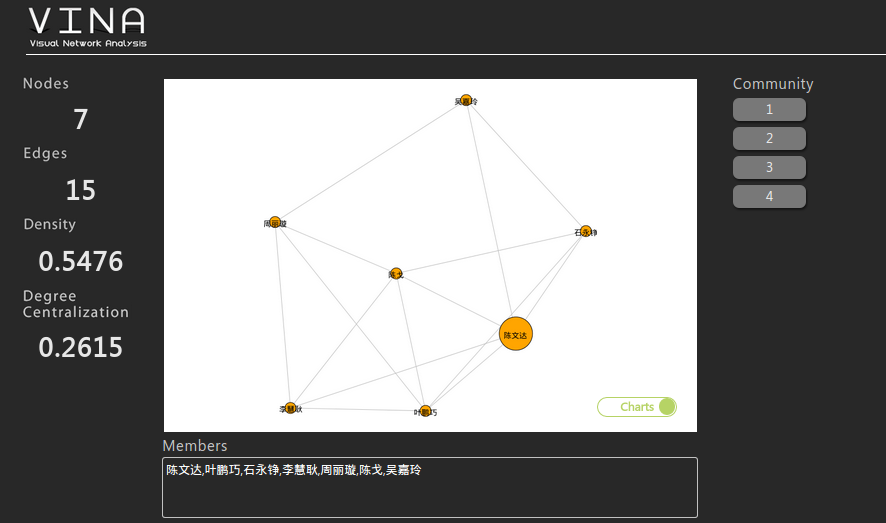
另外，我们可以点击图中的右下角的地方，以看到更多的信息，分别有条形图，折线图，饼状图．
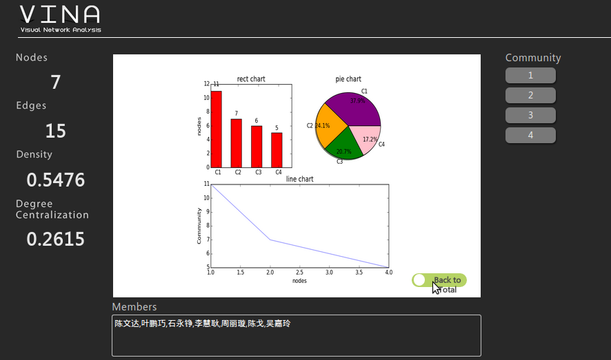
6.另外，在中区的图的右上角还有一个按钮Figure,点击此按钮我们可以看到另一些的社区与节点的信息。如图：
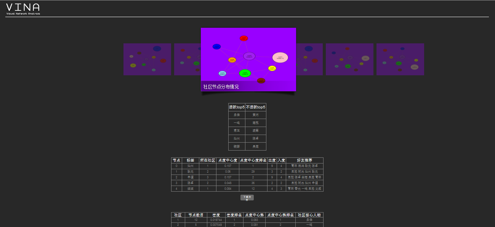
该页面包括了社区节点分布情况图，社区密度情况图，社区中心势情况图，社区活跃人物top5，社区不活跃人物top5，每个节点的属性分析表（节点号，标签，所在社区，点度中心度，点度中心度排名，出度，入度，好友推荐），社区的属性分析表（社区号，节点数目，密度，密度排名，点度中心势，点度中心势排名，社区核心人物）；
社区节点分布情况图，社区密度情况图，社区中心势情况图都是以社区为节点，节点的大小分别体现了社区的节点，密度，中心势的情况，边表示社区与社区之间的联系情况，联系较为紧密的则有边，反之则无，如社区节点分布情况图：
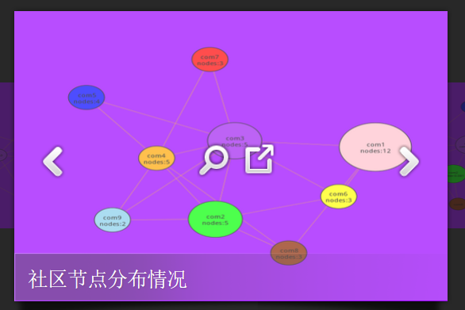
社区活跃人物top5与社区不活跃人物top5，顾名思义，反映了社区中某些人物的活跃程度，而这些人物往往在信息传播中起到重要作用，如图下：
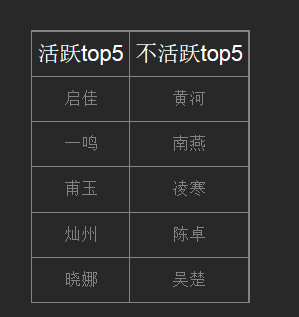
节点的属性分析表，展示的每个节点的各项属性，其中包括节点号，标签，所在社区，点度中心度，点度中心度排名，出度，入度，好友推荐。但由于篇幅有限，本系统只在页面上提供前5个节点的信息，而用户可以通过点击下载文件的按钮下载全部信息，具体如下：
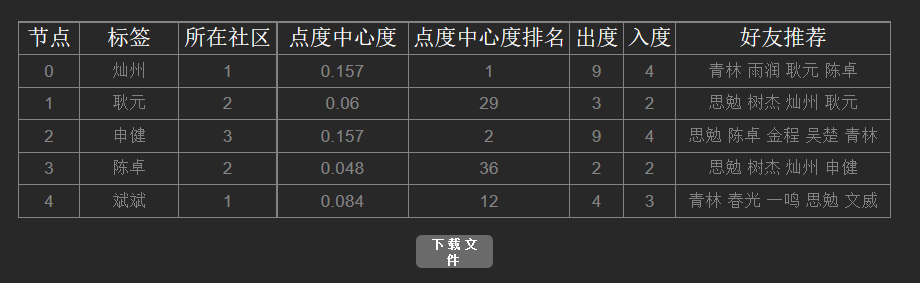
社区的属性分析表，展示的每个社区的各项属性，其中包括社区号，节点数目，密度，密度排名，点度中心势，点度中心势排名，社区核心人物。但由于篇幅有限，本系统只在页面上提供前5个社区的信息，而用户可以通过点击下载文件的按钮下载全部信息，具体如下：
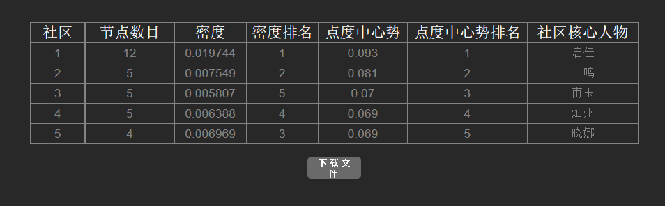
Attention|注意事项
1.导入的数据需包含有0节点；2.建议导入文件用xls格式，方便检查．本网站不提供导入文件的预览，所以导入前需检查文件是否符合规格．
3.对于大数据的画图，可能需要较长的时间，如果页面还在等待，此属于正常情况，请耐心等候，勿刷新．